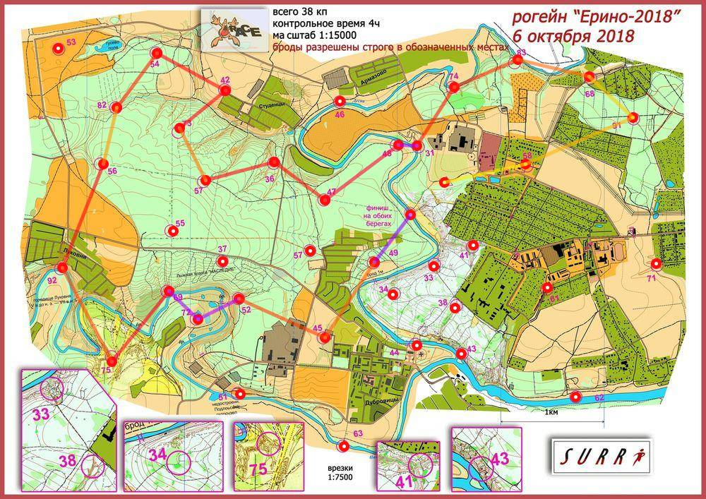

Рогейн Ерино 6.10.18
| Участники | Калашников Андрей
|
| Группа | М4Б |
| Место | 12 |
| Очки | 125 |
| Штраф | 0 |
| Время | 03:57:54 |
| Результат | 125 |
| КП | Время | Сплит | Расстояние, км | Темп, мин/км |
|---|
| С | 12:00:00 | | | |
| 58 | 12:06:23 | 00:06:23 | 0.806 | 7.9 |
| 91 | 12:17:05 | 00:10:42 | 1.128 | 9.5 |
| 68 | 12:22:11 | 00:05:06 | 0.572 | 8.9 |
| 83 | 12:30:35 | 00:08:24 | 0.715 | 11.7 |
| 74 | 12:39:40 | 00:09:05 | 0.669 | 13.6 |
| 31 | 12:49:07 | 00:09:27 | 0.67 | 14.1 |
| 48 | 12:53:26 | 00:04:19 | 0.18 | 24.0 |
| 47 | 13:12:02 | 00:18:36 | 0.884 | 21.0 |
| 36 | 13:20:56 | 00:08:54 | 0.613 | 14.5 |
| 57 | 13:32:02 | 00:11:06 | 0.691 | 16.1 |
| 73 | 13:38:26 | 00:06:24 | 0.563 | 11.4 |
| 42 | 13:47:41 | 00:09:15 | 0.573 | 16.1 |
| 54 | 13:59:30 | 00:11:49 | 0.753 | 15.7 |
| 82 | 14:08:31 | 00:09:01 | 0.652 | 13.8 |
| 56 | 14:14:19 | 00:05:48 | 0.558 | 10.4 |
| 92 | 14:31:27 | 00:17:08 | 1.076 | 15.9 |
| 75 | 14:44:31 | 00:13:04 | 1.026 | 12.7 |
| 69 | 15:00:35 | 00:16:04 | 0.875 | 18.4 |
| 72 | 15:09:54 | 00:09:19 | 0.388 | 24.0 |
| 52 | 15:19:46 | 00:09:52 | 0.444 | 22.2 |
| 45 | 15:31:33 | 00:11:47 | 0.91 | 12.9 |
| 49 | 15:42:04 | 00:10:31 | 0.867 | 12.1 |
| Ф | 15:57:54 | 00:15:50 | 0.582 | 27.2 |
| | | 03:57:54 | 16.195 км | 14.7 мин/км |
|---|
